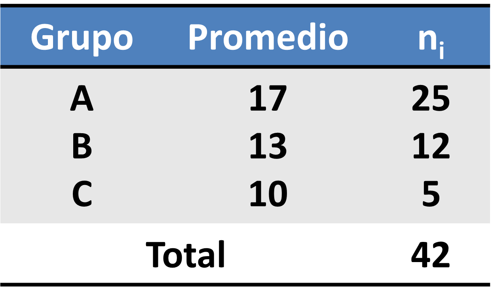
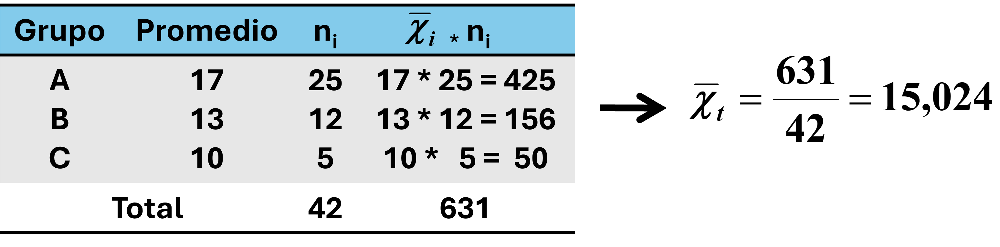

Las medidas de tendencia central son estadísticos que permiten caracterizar o representar a un conjunto de datos simples o agrupados, en función de un valor del centro o una mayoría agrupada de la distribución de esos datos.
Estas medidas resumen la información de un gran volumen de datos en unos pocos indicadores, lo que permite evaluar el comportamiento de una variable, así como, comparar resultados con otras variables de estructura o nivel de medición similar. Son muy utilizadas para describir poblaciones, pero principalmente muestras. Son básicamente el primer escalón para la toma de decisiones, en casi cualquier campo de aplicación o conocimiento. En generla, los objetivos de las medidas de tendencia central lo podemos resumir en dos:
Las medidas clásicas de tendencia central son:
Se define como un valor representativo y predominante dentro de un conjunto de datos. Permite sintetizar o resumir la información de una gran masa de datos por uno solo, lo cual complementado con otros estadísticos, permite al investigador tener un indicador básico sobre el comportamiento del fenómeno estudiado.
Las medias o promedios, las podemos clasificas en dos grandes grupos:
Los promedios matemáticos se aplican en variables numéricas cuantitativas, generalmente medias en escala de intervalo o razón.
Dentro de los promedios matemáticos más usados o conocidos, tenemos:
En términos sencillos, para datos no agrupados o serie de datos simples, la media o promedio aritmético se obtiene de la siguiente forma: \[Media \hspace{0.1cm} aritmética = {suma \hspace{0.1cm} de \hspace{0.1cm} todos \hspace{0.1cm} los \hspace{0.1cm} datos \hspace{0.1cm} de \hspace{0.1cm} la \hspace{0.1cm} serie \over número \hspace{0.1cm} o \hspace{0.1cm} cantidad \hspace{0.1cm} de \hspace{0.1cm} datos}\]
Entonces, si cada dato lo representamos como Xi , donde i = 1,2,3,4, ...., etc entonces podemos escribirlo así: \[\bar{x} = {x_{1}+x_{2}+x_{3}+....+x_{n} \over n}\]
La suma de x1 + x2 + x3 +...+ xn, se puede representar de forma abreviada con la letra griega sigma en mayúscula Σ , que representa el sumatorio
Finalmente, la fómula queda así: \[\bar{x} = {\sum_{i=1}^n x_{i} \over n}\]
Ejemplo: Las notas de 5 estudiantes en estadística es: 5.5, 6, 6.8, 5.2 y 6.5. Entonces la media o promedio arirmético es: \[\bar{x} = {5.5+6+6.8+5.2+6.5 \over 5} = {30 \over 5} = 6\]
Por tanto, se puede afirmar que la nota media o promedio de los 5 estudiantes en estadística es 6 puntos.
Entonces el nuevo promedio que es \(\bar{x} = 7\), es igual a \(\bar{x} \pm k\) (5+2)
Entonces el nuevo promedio que es \(\bar{x} = 10\), es igual a \(\bar{x} \ast / \div k\) (5*2)
Veamos la siguiente demostración:
Tenemos los promedios de tres grupos con sus respectivos "n"
Por tanto, la media aritmética total o conjunta será: \[\bar{x}_{t} = {\bar{x}_{1}*n_{1} + \bar{x}_{2}*n_{2} + \bar{x}_{3}*n_{3} +...+ \bar{x}_{i}*n_{i} \over N_{t}} \Rightarrow \bar{x}_{t} = {\sum \bar{x}_{n}*n_{n} \over N_{t} } \]
Donde:
\(\bar{x}_{i} = \) Media Aritmética de c/grupo
\(n_{i} = \) Número o cantidad de datos de c/grupo
\(n_{t} = \) Número o cantidad total de datos
\(\bar{x}_{t} = \) Media Aritmética total o conjunta
Entonces:
Esto quiere decir, que el promedio total o conjunto de los tres grupos considerados es 15.024
Como ya se indicó más arriba, la media o promedio geométrico es ideal para datos contínuos dispuestos en progresión geométrica (una progresión geométrica es una sucesión de números en la que el cociente (o razón) entre dos términos consecutivos es siempre igual. Esto significa que cada término se obtiene multiplicando por una misma cantidad al término anterior), por ejemplo, el interés compuesto en finanzas, crece en progresión geométrica, así mismo el crecimiento de usuarios de redes sociales o servicios digitales sigue un patrón geométrico, también la reproducción de bacterias o virus puede seguir una progresión geométrica. Tambien es muy usada para promediar porcentajes o proporciones. Veamos un ejemplo de los valores en porcentajes de obesidad en 4 países. Nos piden determinar la obesidad promedio:
| Países | Obesidad (%) |
|---|---|
| México | 28.9 |
| Argentina | 28.3 |
| Chile | 28 |
| Uruguay | 29.7 |
Por tanto, el cálculo promedio de los porcentajes de obesidad es: la raiz cuarta (porque tenemos 4 países) del producto de cada uno de los porcentajes de los 4 países: \[\bar{x} = \sqrt[4]{28.9*28.3*28*29.7} = 28.7 \]
Esto quiere decir, que el porcentaje promedio de obesidad de esos 4 países es del 28.7%
Tal como se indicó más arriba, el promedio armónico es especialmente útil en situaciones donde los datos representan razones o tasas y se necesita encontrar un promedio que considere el impacto proporcional de cada valor en el total. Algunos ejemplos son: en logística y transporte, el promedio armónico se utiliza para calcular la velocidad media cuando hay variaciones en las velocidades en diferentes tramos de un viaje, en inversiones, el promedio armónico se utiliza para calcular el rendimiento medio de activos con diferentes tasas de rendimiento cuando se invierte en cada uno durante el mismo período, en biología y ecología, el promedio armónico se puede emplear para encontrar una tasa promedio de crecimiento en poblaciones de organismos, especialmente cuando diferentes grupos o hábitats tienen distintas tasas de crecimiento que necesitan ser combinadas.
Veamos un ejercicio simple para entender cómo funciona: Supongamos que una persona decide salir a correr 10 km. Los primeros 2 km corre a 15 km/h, los siguientes 2km, a 17 km/h, los siguientes 2km, a 14 km/h, y los otros dos tramos de 2km, a 13 km/h y 12 km/h, respectivamente. ¿Cuál es el promedio de velocidad (km/h) que corre esta persona?.
Por lo tanto, como la media armónica es el inverso de la media aritmética de los inversos de cada valor, entonces: \[\bar{x} = {5 \over {1 \over 15} + {1 \over 17} + {1 \over 14} + {1 \over 13} + {1 \over 12} } = 13.99\]
Esto quiere decir, que esta persona corre una distancia de 2 km a una velocidad promedio de 13.99 km/h
Dentro de los promedios no matemáticos, tenemos la Mediana y Moda. Tienen mútiples usos en la industria, comercio, salud y economía entre otros, ya que contribuyen en la toma de desciones al observar tendencias centrales y patrones más representativos en sus datos sin que estos se vean distorsionados por valores atípicos, por ejemplo en el caso de los salarios, estos indicadores son más "precisos" que los promedios artiméticos ya que no se ve influenciada por ingresos extremadamente altos o bajos. En estudios clínicos de salud, estas indicadores son muy valiosos entender datos de recuperación o supervivencia, lo cual ayuda a definir expectativas realistas para los pacientes.
Es el valor que divide a una distribución de datos ordenada, en dos partes iguales, es decir, de un lado a otro existe el mismo número de datos. Veamos un ejemplo.
Se tienen las siguientes edades de un grupo de personas: 8, 4, 6, 10, 2. El procedimiento a seguir es este:
Es el valor de la variable que presenta la mayor frecuencia absoluta, o simplemente, es el valor que más se repite en una serie de datos.
Para serie de datos simples (ordenadas), la moda se obtiene por simple inspección de frecuencias.
Ejemplo: obtener la moda de la siguiente serie de datos: 2, 2, 3, 4, 4, 5, 5, 5, 5, 6, 6, 6, 7, 8, 8, 9, 9
La moda es: Mo = 5, porque 5 es el valor que más se repite o tiene mayor frecuencia. 2, 2, 3, 4, 4, 5, 5, 5, 5, 6, 6, 6, 7, 8, 8, 9, 9
| Media Aritmética |
|---|
| Es el promedio más conocido y usado |
| Influye cada valor de la serie |
| Los valores extremos de la serie afectan el promedio (atípicos) |
| Mediana |
| Concepto sencillo y fácil de calcular |
| No está influida por los valores extremos de la serie |
| Se usa cuando el promedio se distorsiona por influencia de valores extremos |
| No es confiable cuando los datos no tienden a agruparse hacia el centro |
| Moda |
| No está afectado por los valores extremos de la serie |
| Es posible encontrar más de una moda en series de datos grandes. Es muy frecuente en distribuciones asimétricas la existencia de dos modas (bi-modal) |